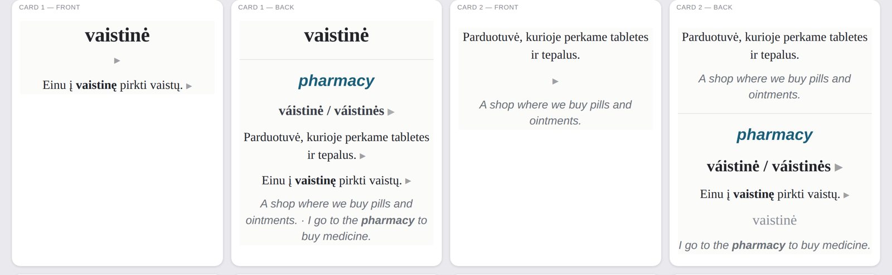
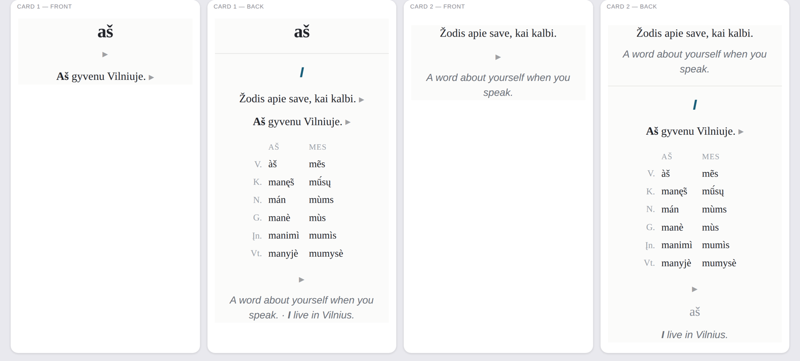

Every word makes a recognition card and a production card. The second one is
the point of the deck: a definition written entirely in Lithuanian asks
you to produce the word, which is why no definition ever contains the word it
defines.

A noun, all four states. The English is always italic and set in a different face, so it never reads as Lithuanian.
What's on a card
Audio on everything — the headword, its inflected forms, the Lithuanian definition and the example sentence. Four recordings per word.
Stress marks (kirtis) on headwords and on the inflected forms shown, not just the dictionary form.
Inflected forms on every card: nouns with the genitive, verbs with 3rd person present and past, adjectives with the feminine.
Full case tables for the personal pronouns and demonstratives, voiced — including the feminine column that most decks leave out.
The target word is bolded in the English translation, so it is obvious which word the sentence is teaching.
Tags for everything — tema::, pos::, batch:: — so you can build a filtered deck of just the verbs, or just the food theme.

Pronouns carry a two-column case table instead of a forms line, and the audio speaks all twelve forms.
Eighteen themes, exam topics first
The first twelve are the twelve topics of the Ministry of Education's A2
content description (A2 kalbos mokėjimo lygio turinio aprašas). Six more
cover ground the deck needed but that description does not name.
Asmens tapatybė 128
Pastatai ir namai 99
Gamta, regionas 108
Kasdienis gyvenimas 118
Laisvalaikis 124
Kelionės 103
Santykiai su žmonėmis 134
Sveikata ir higiena 128
Švietimas ir mokslas 56
Prekyba 113
Maistas ir gėrimai 121
Paslaugos 43
Darbas ir profesijos 27
Laikas ir orai 59
Skaičiai ir įvardžiai 89
Spalvos ir savybės 83
Valstybė ir visuomenė 31
Kalba ir gramatika 29
Getting it
Download the .apkg from the
latest release
and open it with Anki, or import it from within Anki:
File → Import. It arrives as Lietuvių A2 with a subdeck per theme.
Studying for recognition only? Suspend the second card type — it roughly
halves the workload, and it is much the harder half.
How it was made
Honestly, and with the seams showing:
The word list follows the A2 syllabus and the vocabulary of Pusiaukelė (Ramonienė et al.) and Nė dienos be lietuvių kalbos.
Inflected forms and stress marks come from English Wiktionary, the VDU Kirčiuoklis stress tool and the phonology_engine library, cross-checked against each other. Every form is verified against the hunspell lt_LT dictionary.
Definitions, examples and translations were written with AI assistance and checked by automated rules — no headword inside its own definition, an inflected form in every example, restricted vocabulary, spell-checked throughout. They have not been proofread by a native speaker.
The audio is synthesised, not recorded: the Lithuanian synthesiser operated by UAB Intelektika, voice “astra”, built on the publicly funded LIEPA project.
Intelektika's terms of use state that “Mūsų suteiktų Paslaugų rezultatus
galite naudoti tiek asmeniniais, tiek komerciniais tikslais” — the results of
the service may be used for personal and commercial purposes. No attribution is
required; the credit below is courtesy.
Corrections are very welcome. Open an issue with the word and what is wrong,
and it will go into the next build.